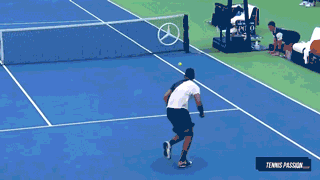
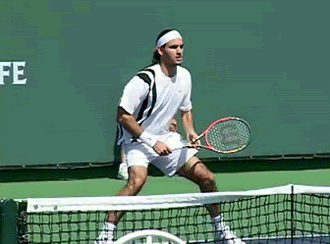
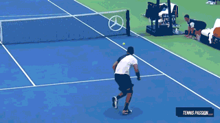

step5. 역시! 테니스
아직도 테니스 궁금하지 않다고요?! 그렇다면 테니스 거장들의 경기 살짝 보여드릴게요.
Roger Federer

Novak Djokovic
테니스. 다들 어떻게 알게 되었나요?
저는 테니스의 왕자로 테니스를 알게 됐어요. \^0^/
테니스의 왕자 덕분일까요?
부모님의 추천으로 동아리를 찾던 중 테니스 동아리를 발견하게 됐어요.
그 때 테니스의 왕자가 슥 스쳐지나가면서 나도 한번…?이라는 생각이 들었고
결국 호기심에 가입하게 됐어요.
모두 테니스가 어떤 운동일지 궁금하지 않나요?
테니스는 어떤 운동일까요? 배드민턴 비슷한 운동? 접하기 어려운 운동? 테니스 치마..?
이런 생각이 떠오르지 않나요?(제가 그랬거든요!ㅎㅎ)
테니스를 처음 배우기 시작할 때를 말하자면...과연 내가 할 수 있을까? 라는 걱정이었어요. 하지만 걱정도 잠시. 함께 배우기 시작한 친구들도 공이 이리저리 튀면서 테니스장 밖으로 공이 나갔죠. 잘하면 재능맨! 소리를 들을 수 있고 못해도 다같이 공을 날리며 즐거웠어요. 생각보다 어렵지 않았던 테니스 어떤 운동이길래 어려운 운동으로 생각했을까요?
한 번 알아봅시다!
테니스 종목은 단식, 복식, 혼합복식 등이 있으며 경기는 포인트-게임-세트-매치 4단계로 이루어지죠. 경기를 구성하는 스코어는 0점=0(love), 1점=15(fifteen), 2점=30(thirty), 3점=40(forty)로 4점을 먼저 따낸 선수는 1게임을 얻게 됩니다. 이렇게 6게임을 선취하면 1 세트를 이기게 되죠! 매치란 승패를 결정짓는 세트 수를 말하며, 5세트 매치에서는 3세트를, 그리고 3세트 매치에서는 2세트를 먼저 얻으면 승자가 됩니다.
생각보다 단순하죠? 테니스는 다른 스포츠와 비슷하다고 생각해요. 학교와 근처 학원에서 배울 수 있는 스포츠와 달리 접할 기회가 없어 낯설고 어렵게 느껴진게 아닐까요?
이제 테니스가 어떤건지도 알겠다. 실전으로 쳐봐야 재밌지 않겠어요? 테니스를 배워봅시다.자세는 처음인 만큼 중요하기 때문에 코치님들이 자세히 알려주시는 가장 기본 단계에요. 자세만 몇 시간 할지도 모르죠.ㅎ 저는 간단한 설명과 팁! 알려드릴게요.
라켓을 잡는 법(그립)은 이스턴, 웨스턴, 컨티넨탈 등 있지만 보통 이스턴 그립으로 배우게 된답니다.
우리는 아주 많은 공을 치게 될거에요. 카트에 산더미로 쌓인 공을 다 치고 나면 이제 희열을 느껴봅시다. 공을 다치고 나면 공줍기 타임. 치는 것보다 줍는 것이 더 힘들지도 몰라요.ㅎㅎ
*아래의 움짤을 참고해보세요*
공에 익숙해지면 이제 포핸드로 랠리를 할 수 있어요. 포핸드는 처음 배우는 타법으로 익숙해지면 플랫, 드라이브, 슬라이스 같은 고급 기술도 사용할 수 있답니다! 고급 기술은 정말 간지가 풀풀 풍겨요. 다들 이정도는 해야지 훗~ 하는 느낌이랄까요?
랠리는 자세가 잡히고 나면 테니스를 쉽게 즐길 수 있는 방법 중 하나에요. 룰에 얽매이지 않고 친구들과 즐길 수 있어요. 게임과는 다른 매력을 느낄 수 있답니다. 희열과 뿌듯함도 느끼고 열정맨이 된 자신을 볼 수 있어요.
하다보면 엄청 욕심이 생기게 되죠. 포핸드를 배우고 나면 백핸드를 배우고 그다음은 포백(포핸드+백핸드)으로 치게 됩니다. 테니스가 익숙해지기 시작할 시기죠.
이제 심화를 배울 차례가 온 것입니다. 제가 생각하기에 심화!란 느낌이죠. 하핫.
발리를 배울 수 있어요. 발리가 끝나면 스매시, 로브, 서비스 등이 남아있죠.
간단하게 훑어 볼까요?
공이 바닥에 떨어지기 전에 치는 방법으로 주로 네트 플레이에서 많이 쓰여요.
테니스 동호회 아저씨들이 많이 치는 노련한 기술!
스매시는 높은 공을 머리 위에서 강하게 내려치는 타법이에요.
아주 간지나고 공격력 짱인 타법이죠!
볼을 높게 띄워 상대의 배후를 노리는 아주 성가신 타구입니다.
서브는 게임 시작 시 가장 먼저 하는 동작입니다!
2회까지 행할 수 있어요.보통 서브는 처음은 강렬하게 두 번째는 안전하게 한답니다.
아직도 테니스 궁금하지 않다고요?! 그렇다면 테니스 거장들의 경기 살짝 보여드릴게요.
Roger Federer
Novak Djokovic
다들 테니스 잘 알게 됐나요? 저도 초보라 아직 부족하지만 여러분이 테니스를 즐겼스면 좋겠답니다! 접하기 힘들어 고민되었던 분들 대학교 동아리, 집 근처 코트장을 검색하면 테니스를 배울 수 있을 거에요!
특히! 대학교 동아리! 인생 선배와 후배들을 만날 수도 있을 거에요! 못할 것 같다는 마음은 잠시 두고 도전해보세요! 모두 즐거운 테니스 합시다~!
모두들 안녕!
<출처>
https://www.instiz.net/name/16644384
https://kini.kr/1718
https://1boon.kakao.com/wngproject/5c80b7866a8e5100018bf07b
https://m.cafe.daum.net/volley1/_album/178
https://terms.naver.com/entry.nhn?docId=1231520&cid=40942&categoryId=32067
https://redtea.kr/pb/pb.php?id=fun&no=28614
https://terms.naver.com/entry.nhn?docId=530704&cid=46667&categoryId=46667
https://terms.naver.com/entry.nhn?docId=73183&cid=43667&categoryId=43667